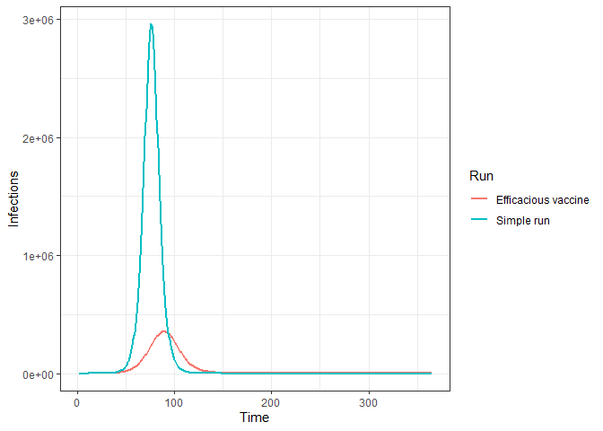

nimue
IMPORTANT NOTES
⚠️ This code is released with no support. Please submit any questions or bugs as issues and we will try to address them as quickly as possible.
⚠️ This model is in active development and so parameter name and behaviours, and output file formats will change without notice.
⚠️ The model is stochastic. Multiple runs with different seeds should be undertaken to see average behaviour.
⚠️ As with any mathematical model, it is easy to misconfigure inputs and therefore get meaningless outputs. Please contact the authors if you intend to publish results using nimue.
Nimue is built on the shoulders of squire and sircovid. Nimue is named after the Lady of the Lake
Installation
You can install the development version from GitHub with:
# install.packages("devtools")
devtools::install_github("mrc-ide/nimue")Overview
Nimue is an extension to the squire package that allows vaccination to be included. For detailed information on the base model structure and parameterisation please visit the squire webpage.
Nimue adds an additional dimension to the squire model, allowing us to track the vaccination status across the modelled population. This allows us to caetgorise people into 4 groups:
- Unvaccinated - those who have not yet received a vaccinate course.
- Vaccinated but not protected - those who have received a vaccine course, but are not yet protected buy the vaccine.
- Vaccinated and protected - those who have received a vaccine course and are protected.
- Previously vaccinated - those who were previously protected by the vaccinate but are no longer so.
Schematic of the vaccination model structure

Nimue includes the flexibility to model different generic vaccine profiles, distribution and prioritisation approaches:
- Vaccine mode of action: infection blocking and/or disease blocking.
- Vaccine efficacy.
- Age varying-efficacy.
- Duration of vaccine-acquired immunity.
- Age-dependent targeting and prioritisation strategies.
Simple run
Running Nimue is very similar to squire, in the most simple case we can specify a country and run a scenario:
run1 <- run(country = "France")To help us visualise the run we can format the raw nimue model output, in this case selecting just the output for infections:
# Format output, selecting a subset and naming the run.
output1 <- format(run1, summaries = "infections", compartments = NULL) %>%
mutate(Run = "Simple run")
# Plot
ggplot(output1, aes(x = t, y = value)) +
geom_line(col = "darkblue", size = 1) +
ylab("Infections") +
xlab("Time") +
theme_bw()
We can add in a very simple vaccination scenario, with a highly efficacious (95%), infection blocking vaccine that is distributed very quickly (500,000 individuals per day), and compare the results:
run2 <- run(country = "France", max_vaccine = 500000, vaccine_efficacy_infection = rep(0.95, 17))
output2 <- format(run2, summaries = "infections", compartments = NULL) %>%
mutate(Run = "Efficacious vaccine")
ggplot(bind_rows(output1, output2), aes(x = t, y = value, col = Run)) +
geom_line(size = 1) +
ylab("Infections") +
xlab("Time") +
theme_bw()
To see demonstrations of full vaccine functionality please see the articles on:
- Efficacy
- Supply
- Coverage and Prioritisation